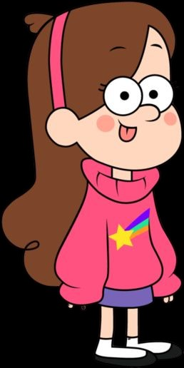

Mabel é a mais sentimental dos irmãos Pine. Ela está sempre tendo problemas com garotos, que quase sempre são na verdade criaturas paranormais disfarçadas, o que abala bastante seu emocional. Ela tem um porco, Waddles, e seu símbolo é a estrela.